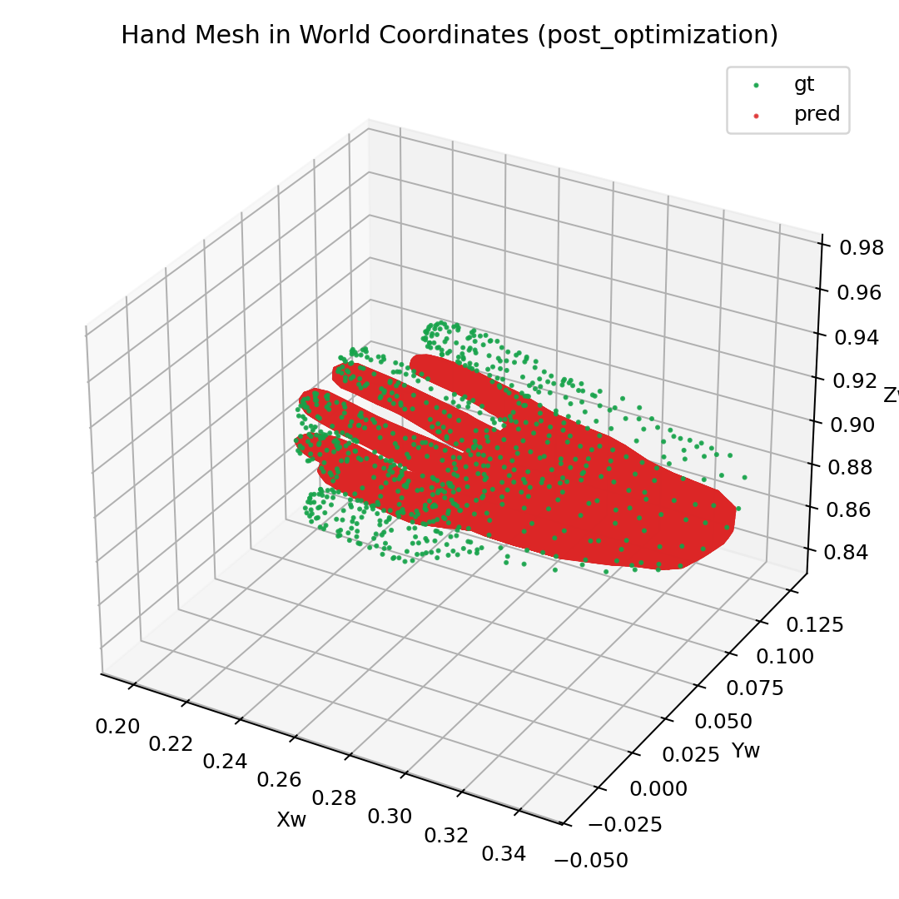
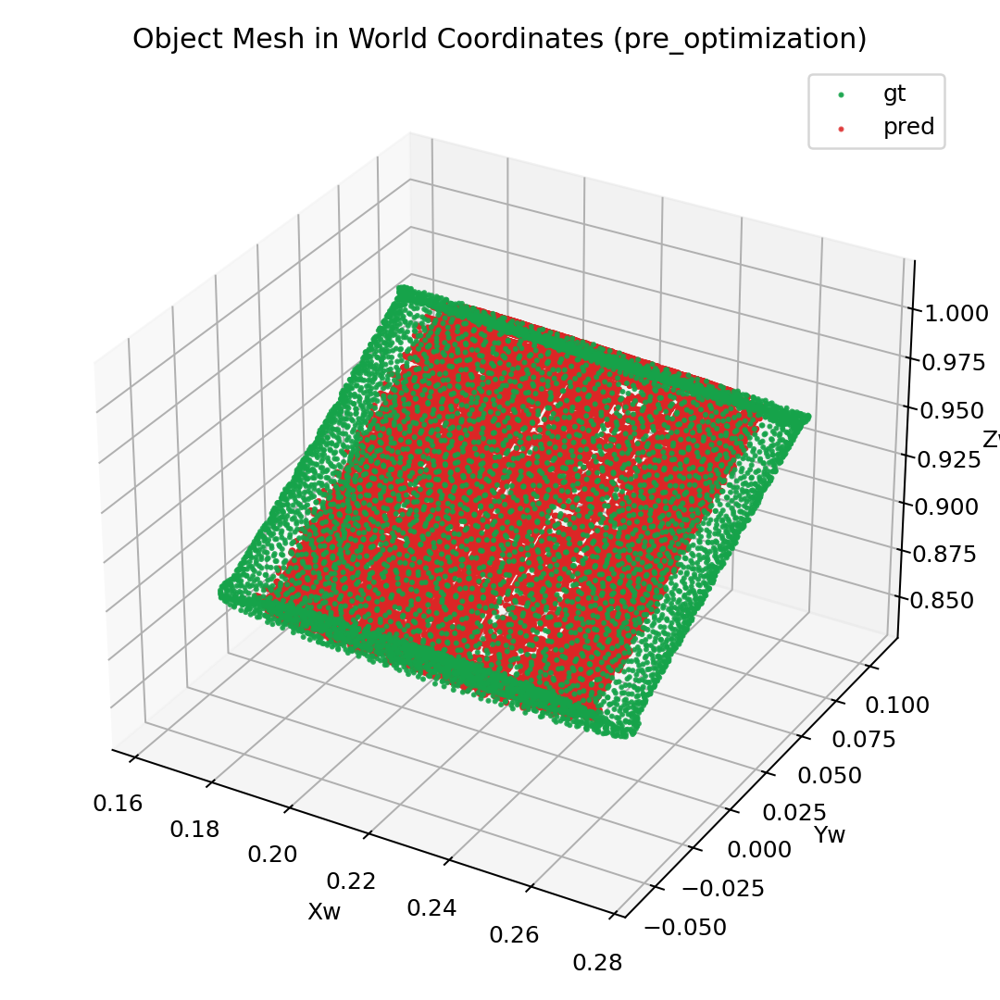
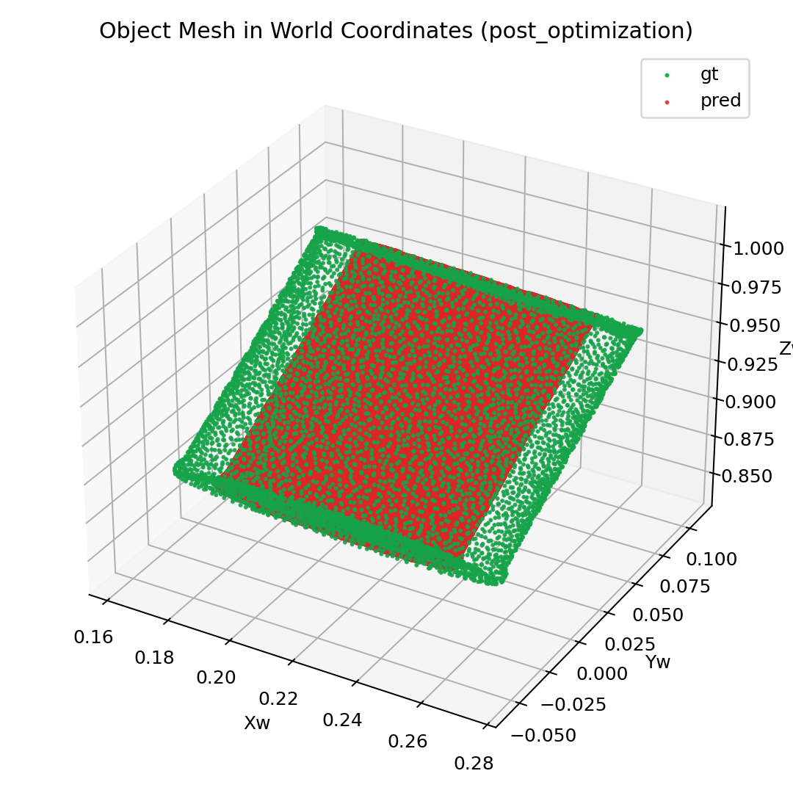
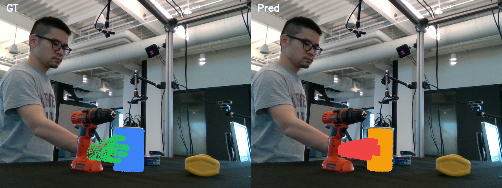
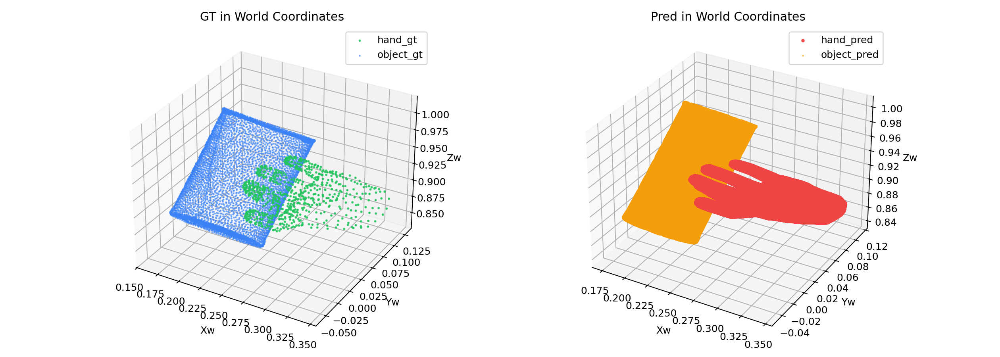

Image overlay: GT (left) vs predicted (right) mesh projections after 500 steps. Predicted meshes align with GT in image space.
Goal: Full overfit run using the existing dexycb_trellis_overfit.py script with the corrected sparse_resolution=256 config, 500 steps, on a single DexYCB frame.
Chamfer L1 distance computed in world coordinate space between predicted and GT meshes (using denormalize_vertices_from_reference_bounds):
| Metric | Pre-optimization | Post-optimization (500 steps) |
|---|---|---|
| Chamfer hand | 0.00548 | 0.00589 |
| Chamfer object | 0.00888 | 0.00917 |
| Latent recon loss | 1023.19 | 0.100 |
| Best latent recon | 0.066 (step ~460) | |
| Hand geo loss (monitor) | 0.030 | 0.017 |
| Object geo loss (monitor) | 0.038 | 0.024 |
Loss convergence over 500 steps (reported every 20 steps):
| Step | Latent Recon | Hand Loss | Object Loss |
|---|---|---|---|
| 1 | 1023.19 | 0.030 | 0.038 |
| 100 | 5.25 | 0.017 | 0.024 |
| 200 | 0.81 | 0.017 | 0.024 |
| 300 | 0.30 | 0.017 | 0.024 |
| 400 | 0.12 | 0.017 | 0.024 |
| 500 | 0.10 | 0.017 | 0.024 |
Hand: GT (blue) vs predicted (green) in world space before training. Chamfer=0.00548. The untrained token bridge produces scattered geometry, not aligned with GT hand shape.

Hand: GT (blue) vs predicted (green) after 500 steps. Chamfer=0.00589. Dense hand mesh with recognizable shape, aligned with GT.

Object: GT (blue) vs predicted (green) before training. Chamfer=0.00888. Noisy geometry from untrained bridge.

Object: GT (blue) vs predicted (green) after 500 steps. Chamfer=0.00917. Dense object mesh matching GT shape.

Image overlay: GT (left) vs predicted (right) mesh projections before training.
Image overlay: GT (left) vs predicted (right) mesh projections after 500 steps. Predicted meshes align with GT in image space.
World scene: GT vs predicted hand+object before training.

World scene: GT vs predicted hand+object after 500 steps. Shapes and poses align with GT.
| Module | Status | Params | Role |
|---|---|---|---|
aggregator.patch_embed | frozen | 603K | Image patch embedding (DINOv2) |
aggregator.frame_blocks | frozen | 302M | Per-frame self-attention (pretrained) |
aggregator.global_blocks | optimized | 302M | Cross-view + cross-modal attention |
hoi_mesh_branch.shape_slat_encoder | frozen | 354M | Trellis.2 SC-Encoder: mesh → SLat |
hoi_mesh_branch.shape_slat_decoder | optimized* | 474M | Trellis.2 SC-Decoder: SLat → mesh |
hoi_mesh_branch.token_bridge | optimized | 67K | SLat ↔ decoder-dim projection (32→1024→32) |
camera_head, point_head, depth_head | optimized | 281M | Scene reconstruction heads |
*Decoder has requires_grad=True but receives zero gradient under current loss — see analysis below.
Loss function: total_loss = latent_recon_loss + kl_weight * trellis_kl
output_proj Cannot Perfectly Align with encoder_latentsThe decoder (initialized with pretrained Trellis.2 weights) works perfectly when given correct latents — proven by the four-way comparison where Path 2 (encoder → decoder, bypass bridge) produces correct meshes. So the problem is specifically: output_proj(global_blocks(input_proj(encoder_latents))) does not equal encoder_latents.
A dedicated alignment analysis breaks down where the error comes from:
| Metric | Before training | After 200 steps |
|---|---|---|
output_proj(input_proj(x)) L2 to x | 1068 | 360 |
W_out @ W_in diagonal mean (should be 1.0) | -0.002 | 0.413 |
W_out @ W_in Frobenius dist from identity | 5.97 | 3.62 |
output_proj(input_proj(x)) does not approximate identity. The composite matrix W_out @ W_in (32×32) only partially converges toward identity (diagonal mean 0.41 instead of 1.0).
| Metric | Before training | After 200 steps |
|---|---|---|
| Global blocks relative change to SLat tokens | 0.35% | 33.88% |
| L2 bypassing global_blocks | 1068 | 360 |
| L2 through global_blocks | 1068 | 0.70 |
| Error reduction by global_blocks | −0.17 | −359.76 |
The pretrained decoder is sensitive to latent perturbations. Even a per-token MSE of 0.0005 (= 0.70 / 1529 tokens) produces measurable mesh degradation:
| Chamfer hand | Chamfer object | |
|---|---|---|
| Pre-opt (encoder→decoder direct, latent L2=0) | 0.0054 | 0.0093 |
| Post-opt (through bridge, latent L2=0.70) | 0.0059 | 0.0092 |
The post-training chamfer is slightly worse than the direct encoder→decoder roundtrip. The decoder correctly decodes whatever latents it receives — but those latents have small errors from the imperfect bridge+global_blocks pipeline.
Ideal: encoder_latents ─── identity ──── decoder → perfect mesh
chamfer = 0.005
Actual: encoder_latents → input_proj → global_blocks → output_proj → decoder → mesh
(32→1024) (302M params (1024→32) chamfer = 0.006
compensate for
bad bridge)
Problem: optimization finds a solution where global_blocks + bridge
jointly approximate identity, but bridge alone does NOT.
The 302M-param global_blocks overfit to correcting the bridge
rather than the bridge learning a clean projection.
Three approaches to make output_proj correctly reconstruct encoder_latents:
| Approach | Mechanism | Expected effect |
|---|---|---|
| A. Initialize bridge as near-identity | Set W_in to first 32 rows of I_1024, W_out to first 32 columns. Bridge starts as near-identity so W_out @ W_in ≈ I |
Bridge-only roundtrip starts at L2 ≈ 0 instead of 1068. Global blocks can stay near-identity. Training fine-tunes rather than learning from scratch. |
| B. Add skip connection around global_blocks | refined = α * global_blocks(x) + (1-α) * x with learnable α, or simply output_proj(input_proj(enc) + delta) |
Ensures the identity path always exists. Global blocks learn a residual correction rather than full reconstruction. |
| C. Two-stage training | Stage 1: freeze global_blocks, train bridge-only to learn identity (32→1024→32). Stage 2: unfreeze global_blocks for cross-modal fusion. | Bridge is forced to learn identity first; global_blocks can't compensate for a lazy bridge. |
W_out @ W_in = I at init guarantees bridge-only roundtrip L2 ≈ 0 from step 0. This means the decoder receives correct latents from the start, and global_blocks can focus on learning cross-modal fusion (their actual purpose) rather than compensating for bad bridge projections.